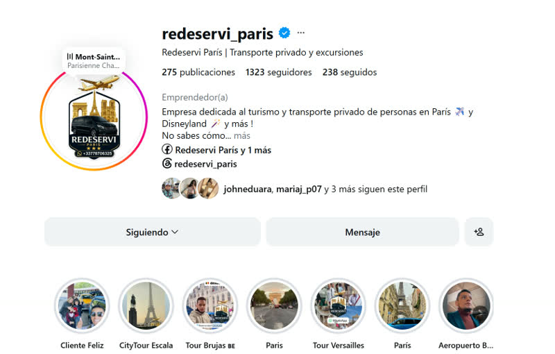
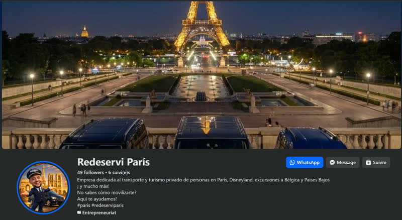
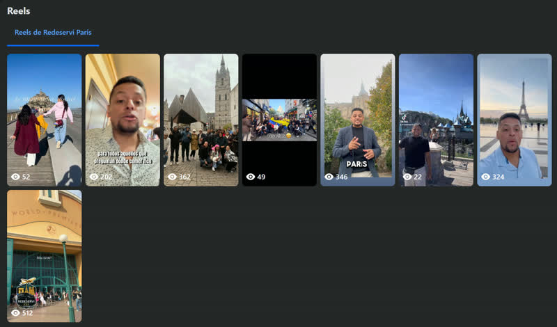
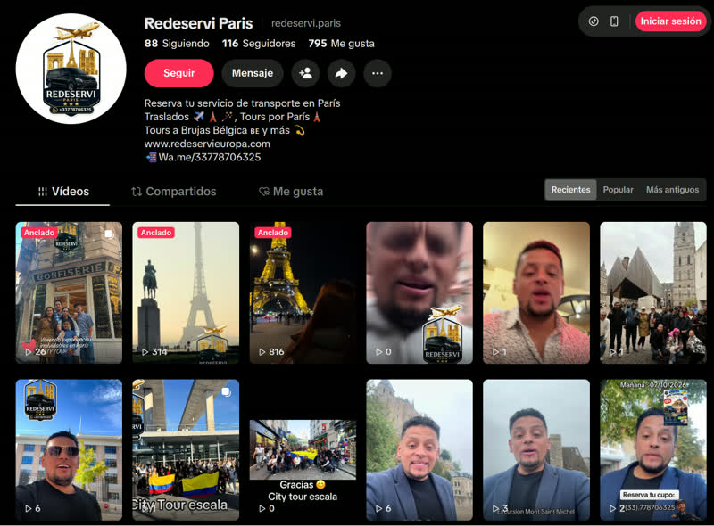
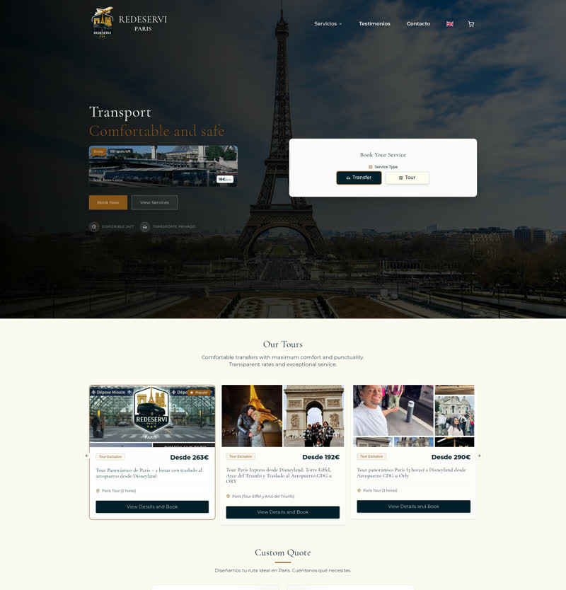
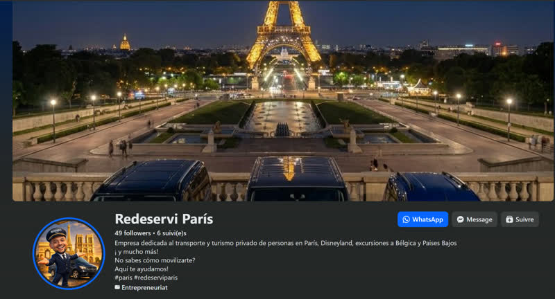

CREAMOS DESDE CERO
Grabación + Edición
8
vídeos originales
Definimos los temas, organizamos la grabación contigo y editamos cada pieza con ritmo, sonido limpio y subtítulos.
TU EXPERIENCIA. UNA PRESENCIA MÁS FUERTE.
Frank, preparé esta propuesta pensando en tu negocio: contenido con tu voz, edición cuidada, acompañamiento cercano y un panel claro para revisar juntos qué genera resultados.
01 / EL CONTENIDO, SIN CONFUSIONES
No se trata solo de entregar archivos sueltos. Hay ideas, guiones, grabación contigo, edición cuidada y seguimiento detrás de cada pieza.
Definimos los temas, organizamos la grabación contigo y editamos cada pieza con ritmo, sonido limpio y subtítulos.
Dos montajes alternativos en total a partir de tus grabaciones, cambiando el gancho inicial, el orden o el ritmo.
Diseños estáticos con la identidad de Redeservi para explicar rutas, traslados y detalles de forma muy visual.
02 / PREPARADO PARA TU NEGOCIO
Mi investigación parte de tu presencia real: redes sociales, web y contenido publicado. Estas capturas las hice yo para preparar la propuesta; no son material que te haya pedido enviar.

Ampliar captura ↗
Ampliar captura ↗
Ampliar captura ↗
Ampliar captura ↗
Ampliar captura ↗
Ampliar captura ↗Capturas tomadas por Andy durante el análisis previo. Pulsa cualquier tarjeta para abrirla en un visor dentro de la página.
03 / TU VOZ, MÁS POSIBILIDADES
El material que grabamos contigo es el punto de partida. Una versión no exige grabarlo todo otra vez: aplicamos dirección de edición, ritmo y diseño visual para cambiar cómo entra el mensaje y sacar nuevas piezas sin repetir rodaje.
El material que grabamos contigo es la base. A partir de tu grabación, aplicamos dirección de edición y estructura narrativa para que el mensaje atrape desde el primer segundo:
Presentamos primero la duda del viajero con un titular limpio en pantalla y un plano atractivo de París; enseguida entra tu explicación. Así quien desliza en redes entiende en dos segundos por qué quedarse.
Son ejemplos de dirección de montaje a partir de una misma grabación. El paquete mensual incluye 8 vídeos originales + 2 versiones adicionales + 4 posts gráficos = 14 piezas por 400 € / mes.
04 / PROPUESTA DE VALOR COMPLETA · PRODUCCIÓN + ACOMPAÑAMIENTO + RESULTADOS
Mi trabajo contigo no termina al entregarte los vídeos. Te acompaño cada mes para planificar, grabar, editar, revisar juntos qué resultados está dando cada pieza y verlo con claridad en tu dashboard.
Definimos qué comunicar cada mes según las dudas reales de los viajeros (traslados, excursiones, tiempos) y preparamos mensajes fáciles de grabar.
Organizo y realizo la grabación; te dirijo en cámara para que te sientas cómodo y mostremos la experiencia auténtica y la voz de Redeservi.
Selecciono las mejores tomas, trabajo el ritmo, el sonido, los subtítulos, las 2 versiones adicionales para probar otros inicios y los 4 posts gráficos.
No estás solo frente a las redes: te acompaño durante el mes para ordenar qué publicamos, alinear cómo presentamos tus servicios y resolver dudas de tu presencia digital.
Revisamos juntos qué piezas retienen mejor la atención, qué temas despiertan más preguntas y qué formatos conviene repetir o ajustar en la siguiente grabación.
Incluimos una vista ordenada de tus números clave —consultas, reservas, evolución de cuentas y contenido destacado— para ver toda la propuesta de valor en acción.
En cada cierre de ciclo miramos cuatro indicadores concretos para que sepas qué está aportando el trabajo y hacia dónde enfocar las siguientes 14 piezas:
Explora más abajo la demostración interactiva con motion graphics de cómo ordenaremos tus números.
Ir al dashboard demo05 / LOS NÚMEROS QUE IMPORTAN · DASHBOARD EN MOTION GRAPHIC
Aquí tienes el demo interactivo del panel que utilizaremos en nuestras revisiones. No nos quedamos solo en reproducciones: conectamos tus 14 piezas mensuales con el tráfico hacia tus perfiles y tu web actual, las consultas recibidas y las reservas.
Todas las cifras del panel son ejemplos ficticios para mostrar cómo revisaremos tu negocio. No son resultados obtenidos ni una previsión. La conexión a tus datos reales se configura al iniciar.
TU PROPUESTA MENSUAL COMPLETA
Ideas, guiones, grabación contigo, edición con motion graphics, versiones adicionales, diseño gráfico, revisión mensual de resultados y el enfoque de dashboard para tener claridad total.
Al comenzar, dejamos por escrito el calendario de grabación, las revisiones, la dinámica de publicación y la facturación. Los demos muestran cómo organizaremos tu presencia y el seguimiento.
DE ANDY, PARA FRANK
La revisamos juntos, elegimos los primeros temas, organizamos la primera grabación y definimos cómo llevaremos el registro de consultas y resultados desde el mes uno.
Andy / Anvazia